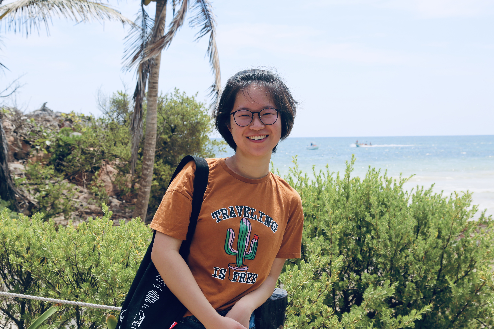

Yiqi Chang is an Interactive Media Arts student from New York University Shanghai, with a minor in Economics. Her interest is UX/UI design and web development. She believes in simplicity, designs with line and basic shapes.
Outside of schoolwork, she is a photography amateur and K-pop lover.
Email Yiqi at yc2548@nyu.edu